|
UNIX> wc input.txt 10000 51456 770000 input.txt UNIX> head input.txt INSERT Ellie Warlike 944-867-2246 165-79-8849 INSERT David Bobble 026-631-5520 826-96-9094 INSERT Isaac Giuliano 462-055-3150 827-30-6292 INSERT Madison Fiend 193-149-4333 106-62-2934 INSERT Chloe Skew 257-554-8530 481-12-6340 INSERT Julia Postdoctoral 018-992-9715 512-23-5507 INSERT Connor Teledyne 808-602-6582 702-11-9340 INSERT Caleb Disciple 457-440-4397 076-91-9105 INSERT Avery Chloe Panther 243-649-0973 727-68-6107 INSERT Anna Placenta 193-082-7570 836-85-9844 UNIX> time sh -c "bstree_test - < input.txt" 0.099u 0.006s 0:00.11 81.8% 0+0k 0+1io 0pf+0w UNIX> time bstree_test - < input.txt 0.105u 0.004s 0:00.11 90.9% 0+0k 0+0io 0pf+0w UNIX> time sh -c "sort input.txt | bstree_test -" 1.721u 0.014s 0:01.73 100.0% 0+0k 0+1io 0pf+0w UNIX>That's a big problem with binary search trees. AVL trees (and other balanced trees like Splay trees, Red-Black trees, B-trees, 2-3 trees, etc) make sure that their trees are balanced so that the various operations are much faster. For example, the program avltree_test is my solution to the AVL Tree lab (which some semesters will not have the pleasure of implementing):
UNIX> time avltree_test - < input.txt 0.099u 0.003s 0:00.10 90.0% 0+0k 0+0io 0pf+0w UNIX> time sh -c "sort input.txt | avltree_test -" 0.336u 0.011s 0:00.34 100.0% 0+0k 0+0io 0pf+0w UNIX> time sh -c "sort input.txt > /dev/null" 0.245u 0.007s 0:00.25 96.0% 0+0k 0+0io 0pf+0w UNIX>As you can see, since sorting takes .25 seconds, performing insertions with the AVL tree takes the same time when the input is sorted as when it is not sorted.
A central operation with AVL Trees is a rotation. It is a way of changing a binary search tree so that it remains a binary search tree, but changes how it is balanced. The concept is illustrated below:
| 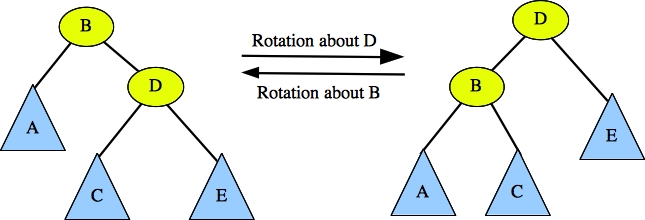 |
B and D are nodes in a binary search tree. They can occur anywhere a tree, but we don't worry about what's above them -- just what's below them. A, C and E are subtrees that rooted as the children of B and D. They may be empty. If they are not empty, then since the tree is a binary search tree, we know that:
When we perform a rotation, we perform it about a node. For example, the rotation pictured above rotates about node D to turn the tree on the left to the tree on the right. It also shows that you can turn the tree on the right to the tree on the left by rotating about node B.
When you rotate about a node, you are going to change the tree so that the node's parent is now the node's child. The middle subtree (subtree C) will change from being one node's child to being the other node's child. The rotation does not violate any of the properties of binary search trees. However, it changes the shape of the tree, and there are multiple types of trees, like AVL, Splay and Red-Black trees that employ rotations to ensure that the trees are balanced.
Below are some example rotations. Make sure you understand all of them:
| 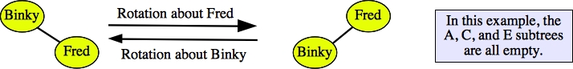 |
| 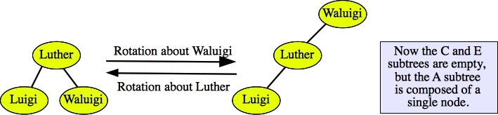 |
| 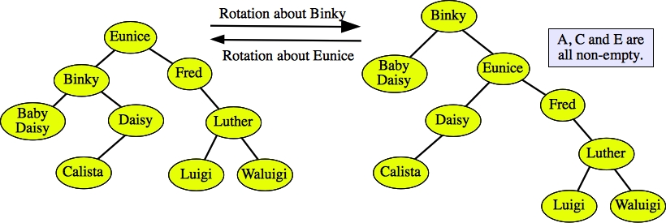 |
| 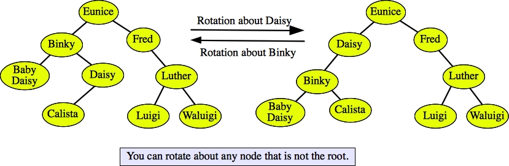 |
The definition of an AVL tree is follows:
| 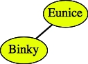 | 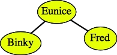 | 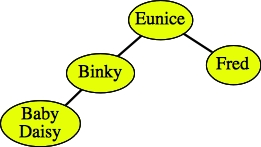 | 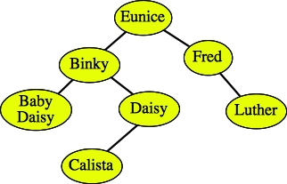 |
And below are two trees that are binary search trees, but are not AVL trees.
| 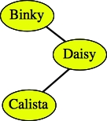
Binky violates the definition |
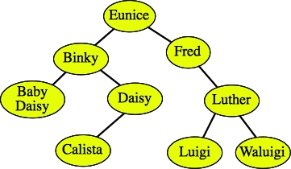
Fred violates the definition |
Let's try some examples. Suppose I have the following AVL tree -- I now annotate the nodes with their heights:
| 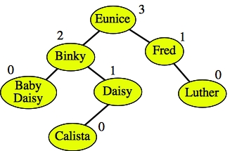 |
If I insert Ahmad, take a look at the resulting tree:
| 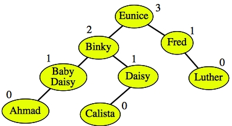 |
The new node Ahmad has a height of zero, and when I travel the path up to the root, I change Baby Daisy's height to one. However, her node is not imbalanced, since the height of her subtrees are 0 and -1. Moving on, Binky's height is unchanged, so we can stop -- the resulting tree is indeed an AVL tree.
However, suppose I now try to insert Waluigi. I get the following tree:
| 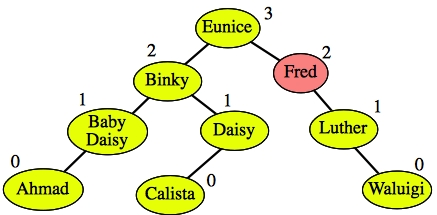 |
Traveling from the new node to the root, I see that Fred violates the balance condition. Its left child has a height of -1 and its right child has a height of 1. I have to rebalance the tree.
| 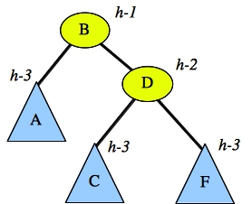 | And you insert a node into tree F, which changes F's height from h-3 to h-2. Let's assume that F is still an AVL tree, so we have this tree, where A C and F are all AVL trees: |
You'll note that the tree is imbalanced, and it is imbalanced at node B. Let's give some concrete examples:
| 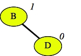 | You insert F into the tree:
Make sure you can match this example up with its general form above. In this case, h=2, both before and after. |
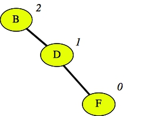 |
| 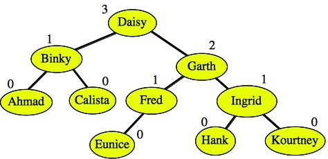 | You insert "Jasper" into the tree:
Make sure you can match this example up with its general form above. In this case, h=4, both before and after. |
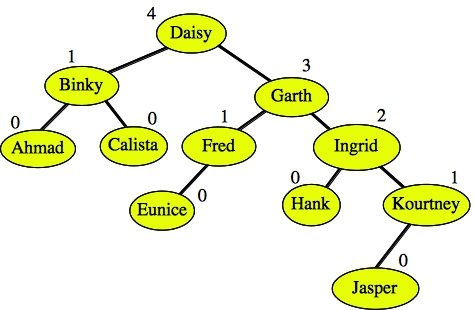 |
| 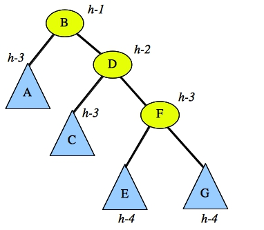 |
You insert an element into either E or G, changing its height,
but not violating the AVL property:
Make sure you can match this example up with its general form above. | 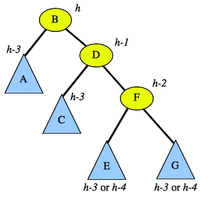 |
Let's take that last example as the general form of a Zig-Zig insertion:
| 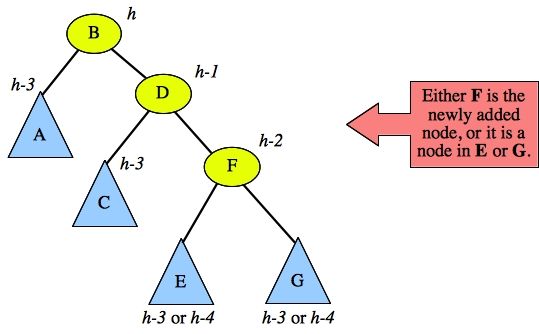 |
In this case, the path from the imbalanced node (B) to the newly added node starts with two right children. That's what makes it "Zig-Zig". To rebalance the tree, you perform a rotation about node D:
| 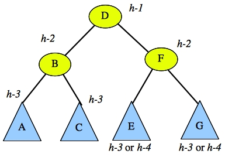 |
Node D is the new root of the subtree. Before the insertion, node B's height was h-1, so the height of the subtree has not changed because of the rotation. Thus, after performing the rotation, you may return from your insertion: you are left with a valid AVL tree.
If the path from the imbalanced node to the newly added node starts with two left children, then you have another Zig-Zig case (the mirror image). You treat it in the same way: rotate about the imbalanced node's left child.
Before going on, take a look at our example above where we inserted Jasper, which led to the tree being imbalanced around Daisy. We can identify this as a Zig-Zig case, so we can fix it by rotating about Garth:
| Before |
After 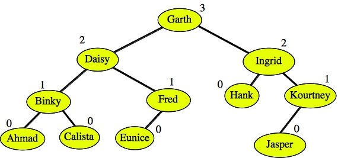 |
Here's another example, where we inserted Waluigi and that made the tree imbalanced at Fred:
| Before 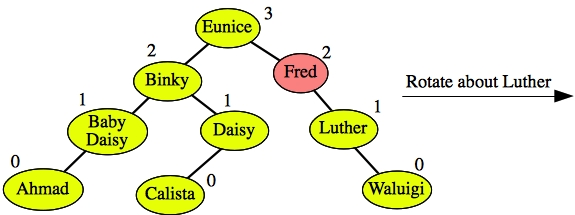 |
After 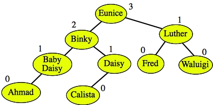 |
| 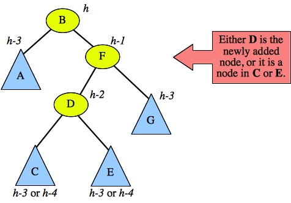 |
To fix this, you perform two rotations. You rotate about node D, and then you rotate about node D again. This is called a double rotation about node D. Here are the two rotations:
| 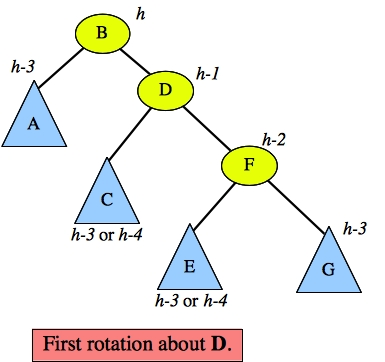 | 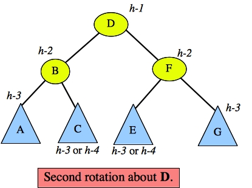 |
Once again, the height of the subtree before deletion was h-1, so when you're done with the double rotation, you are done -- your tree is balanced. Again, the mirror image case is treated in the exact same manner.
Here's an example. Suppose our tree is the following, rather large tree:
| 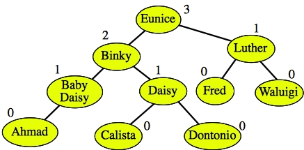 |
And suppose we insert Boo into the tree:
| 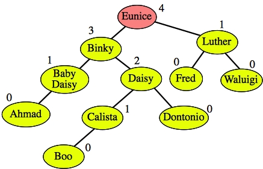 |
Checking for balancing, we have to increment every height up to the root, and the root node Eunice is imbalanced. Since the path to the new node starts with a left child and a right child, this is a Zig-Zag case, and we need to perform a double rotation about the grandchild of the imbalanced node -- Daisy. Below is the result. We have a nicely balanced AVL tree!
| 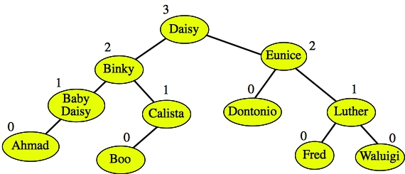 |
| 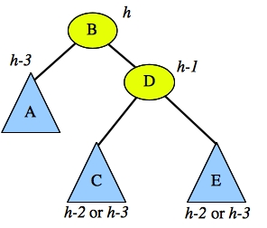 Imbalanced Identification Picture |
The imbalanced node is B. If the height of subtree C is h-3, then the height of E will be h-2 and the tree is a Zig-Zig -- you can rebalance by rotating about node D. If the height of subtree E is h-3, then the height of C is h-2 and the tree is a Zig-Zag -- you rebalance by doing a double rotation about the root of C. If both C and E have heights of h-2, then you treat it as either a Zig-Zig or a Zig-Zag. Both work. For the purposes of your lab, treat this case like a Zig-Zig.
The mirror image works the same way.
Let's look at some examples. First, suppose we delete Calista from the following tree:
| 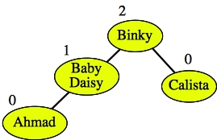 |
You're left with:
| 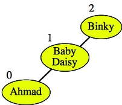 |
You check Calista's old parent -- Binky and although Binky's height hasn't changed, the node is imbalanced. It's clearly a Zig-Zig tree, so you rotate about Baby Daisy to yield the following tree:
| 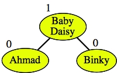 |
Since Baby Daisy is the root, we're done.
Let's try a more complex example -- deleting Eunice from the following tree:
| 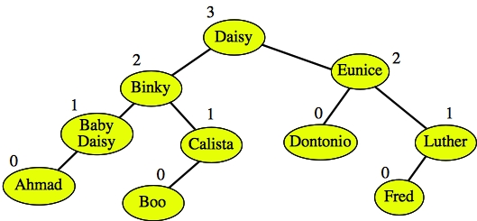 |
First, Eunice has two children. So, we find the child with the greatest key in Eunice's left subtree, which is Dontonio, delete it, and replace Eunice with Dontonio. We start by deleting Dontonio:
| 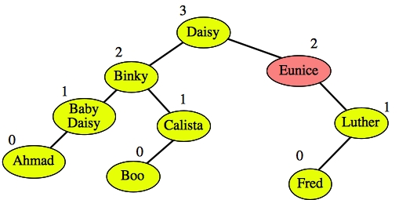 |
And we start checking at Eunice. It is imbalanced. Looking at it, we see that it's a Zig-Zag, so we have to double-rotate about Fred:
| 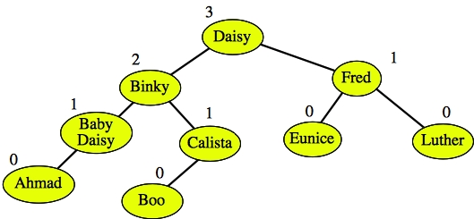 |
Now, the subtree rooted by Fred is balanced, but the subtree's height is one less than it used to be, so we need to move to its parent and check it. Its height is unchanged, and it is balanced, so we're done -- as a last step, we replace Eunice with Dontonio:
| 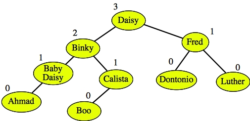 |
| 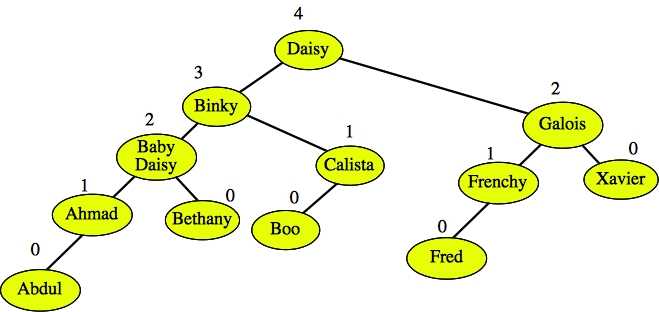 |
As in the previous example, Daisy has two children, so we find the node with the largest key in Daisy's left subtree: Calista. We are going to delete Calista and then replace Daisy with Calista. So, we first delete Calista:
|
We start our checking with Calista's old parent: Binky. The node is imbalanced, so we have to determine whether it is Zig-Zig or Zig-Zag. I'll redraw it so it fits the Imbalanced Identification Picture:
| 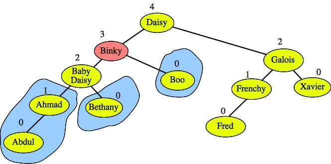 |
In this example, h is three, and we're looking at the mirror image of the Imbalanced Identification Picture. You can see from the picture that the tree is Zig-Zig, so we do a single rotation about Baby Daisy:
| 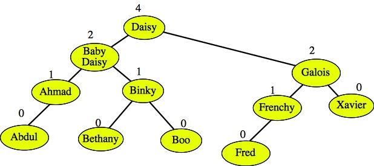 |
Since the tree rooted at Baby Daisy has a smaller height, we need to check its parent (Daisy). Daisy's height is too high, so it needs to be decremented, and since it's the root of the tree, we're done. We replace Daisy with Calista, and return.
| 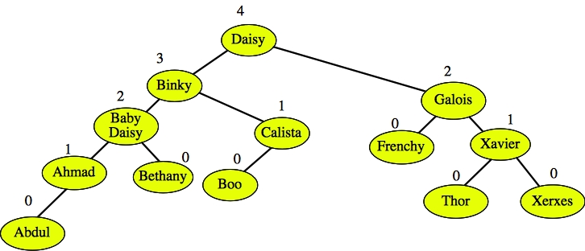 |
We're left with the following tree, and when we start checking Frenchy's old parent, Galois, it is imbalanced:
| 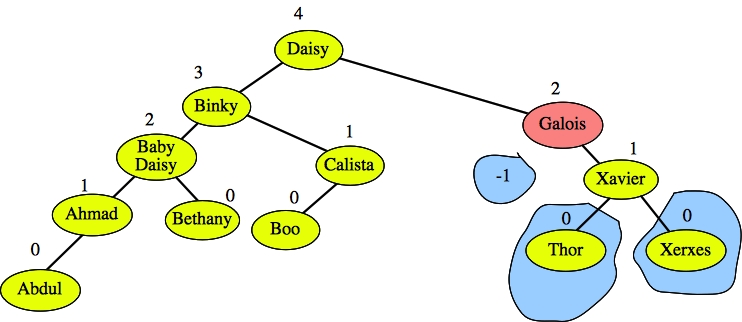 |
I've drawn the subtrees for the Imbalanced Identification picture. h is two, and the C and E subtrees are both of height h-2. Thus, we can treat it either as a Zig-Zig or a Zig-Zag. We will treat it as a Zig-Zig (which you should do in your lab) and do a single rotation about Xavier.
| 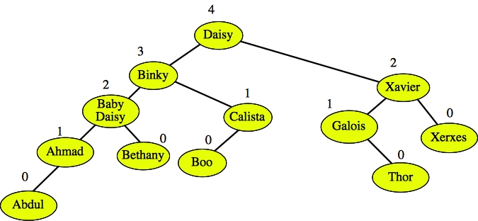 |
Since the subtree's height is the same as it was before, we can return.
| 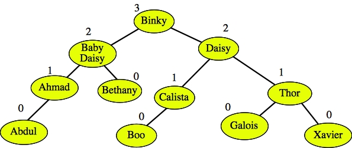 |
To get that, you had to do a Zig-Zag balancing, and a Zig-Zig balancing.